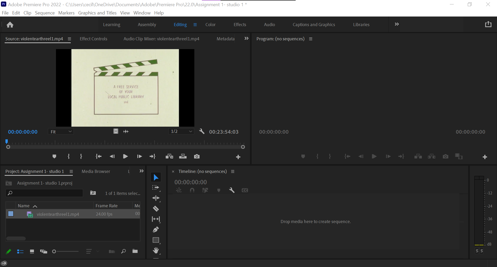

About the project
“Journey to the end”
This is a video I have created using two different audio and visual sources. I aimed to create a complete new video and concept after editing it with Premiere Pro. My general idea of my own video came from constantly rewatching the clips. I noticed what scenes I am able to use well and create a new storyline. Despite this being my first time using Premiere Pro, I didn’t struggle with using the simple cutting and editing tools, in fact during the creation of the video, I was motivated and enjoyed the process.

I like the volcano eruption shots and the few nature shots in the video. I think using these shots together can create a video with a different format, meaning and atmosphere in comparison to the original video. (which was an educational film on volcano eruptions)

The video can be seen as two parts. First half is where emotions are more happy and playful. I loved the fast pace beats in the audio source and I thought it would be a great idea to cut in sync with it. Furthermore, hard and fast pace cuts will accompany the playful music. As the video continues, not only the visual components change to the eruptions of volcanoes but there is also a change in music, which results in a shift in emotions. I used more dramatic and intense music to support the visuals of the video as well as sound effects such as screaming noises and crying noises to convey the stressful emotions that arise while being in a dangerous and life risking situation. This will also give a strong contrast to the first half of the video where the atmosphere is happier and playful.